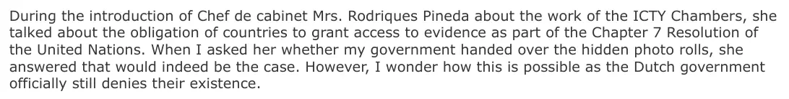

Exhibit · Email
Giltay to the ICTY Office of the Prosecutor, 24 September 2017
The passage
“During the introduction of Chef de cabinet Mrs. Rodriques Pineda about the work of the ICTY Chambers, she talked about the obligation of countries to grant access to evidence as part of the Chapter 7 Resolution of the United Nations. When I asked her whether my government handed over the hidden photo rolls, she answered that would indeed be the case. However, I wonder how this is possible as the Dutch government officially still denies their existence.” Page 1, the paragraph immediately before the closing question. The document is in English. The name is spelled ‘Rodriques Pineda’ here and ‘Rodrigues Pineda’ in the tribunal’s reply of 3 October 2017; she herself writes ‘Rodríguez Pineda’.

Why this document matters
Under Resolution 827, adopted under Chapter VII of the UN Charter, every state, the Netherlands included, had to cooperate fully with the tribunal and comply with its requests for assistance and its orders. This is the question Giltay put to the tribunal about the rolls of film.
He wrote the email on the evening of an open day at the ICTY. In it he reported that the Chef de cabinet there, speaking about that duty to grant access to evidence, had answered his question by saying that the Netherlands would indeed have handed over the hidden rolls. He wondered how that could be, given that the Dutch government still officially denied the existence of the photographs. In the official account, after all, Dutchbat officer Johannes Rutten’s roll of film had failed in development. He closed by asking whether the prosecution had ever demanded access to the eight or more rolls of film that, according to the lawyer Michael Ruperti, were taken from Dutchbat soldiers and are held in military intelligence archives in the Netherlands.
Provenance
- Document
- Email, two pages, printed from the sender’s Gmail account
- From
- Edwin Giltay, writer, www.thecoverupgeneral.com
- To
- The Office of the Prosecutor of the International Criminal Tribunal for the former Yugoslavia (ICTY). The message went to a member of the tribunal’s staff, with a request to forward it to the prosecutor
- Copy to
- Four addressees, whose names and addresses are blacked out in this PDF
- Date
- 24 September 2017, 22:20
- Subject
- “Obligation to hand over evidence as part of the chapter 7 resolution”; as written, with a lower-case c
- Reply
- The Office of the Prosecutor, 3 October 2017, which replied that it had no knowledge of the eight rolls of film
- References
- The case of over two hundred Dutchbat veterans, represented by the lawyer Michael Ruperti, who according to the email were suing the Dutch State, one of their demands being to get their photographs back; the ANP report of 28 November 2016 on ThePostOnline about more rolls of film from Srebrenica in the archives of the Dutch Military Intelligence and Security Service; the unanimous decision of the Standing Committee on Defence of 14 September 2017 that the Minister of Defence must provide answers; the ICTY open day of 24 September 2017
- Language
- English
- Held by
- Edwin Giltay, the sender
- See also
- UN Security Council Resolution 827 (1993), 25 May 1993
Cited in: the essay ‘The Ban Fell, the Book Stood’ in the chapter (4) ‘A Cover-up with an International Dimension’.
Exhibit page: https://
Document: https://
Last modified 28 August 2026, accessed 3 October 2026.

This page is an exhibit to the book The Cover-up General by Edwin Giltay and its accompanying website.